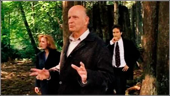
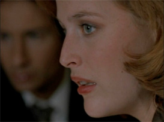
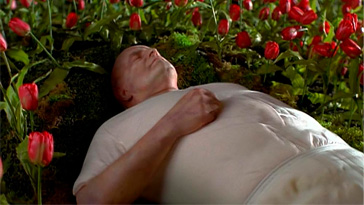

La historia comienza con una serie de asesinatos de psíquicos y adivinos que llaman la atención de los agentes Mulder y Scul
ly. En el curso de la investigación conocen a Clyde Bruckman, un hombre común que posee una habilidad extraordinaria: puede prever cómo
morirá la gente.
Sin embargo, lejos de ser un don, para él es una maldición que lo condena a vivir rodeado de inevitables tragedias.
Bruckman no es un médium en el sentido tradicional, sino alguien que percibe con claridad el desenlace final de las personas, lo que lo
convierte en una pieza clave para resolver el caso. El asesino, obsesionado con eliminar a quienes dicen tener poderes psíquicos, se con
vierte en el antagonista que pone en evidencia la diferencia entre los farsantes y alguien que realmente posee una capacidad sobrenatural
aunque no la desee.
El episodio plantea de manera constante la inevitabilidad de la muerte y la imposibilidad de escapar del destino. Bruckman predice incluso
la muerte de Mulder y Scully, aunque lo hace con un tono irónico y ambiguo que deja espacio para la interpretación. Este aspecto convierte
la trama en una meditación sobre la mortalidad y el sentido de la vida, mostrando que conocer el futuro no necesariamente otorga poder, si
no que puede ser una carga insoportable. El guion de Darin Morgan equilibra la tensión policial con momentos de humor, como la aparición
del supuesto médium “The Stupendous Yappi”, que representa la charlatanería y contrasta con la autenticidad del sufrimiento de Bruckman.
A través de Clyde, el espectador se enfrenta a la paradoja de saber lo inevitable: que todos moriremos. El episodio combina la te ber lo i
nevitable: que todos moriremos. El episodio combina la tensión de un caso policial con una profunda meditación sobre la vida y la muerte,
logrando un equilibrio entre comedia, tragedia y filosofía. Por ello se considera uno de los mejores capítulos de la serie y un ejemplo de
cómo la televisión puede trascender el entretenimiento para convertirse en un espacio de reflexión existencial


